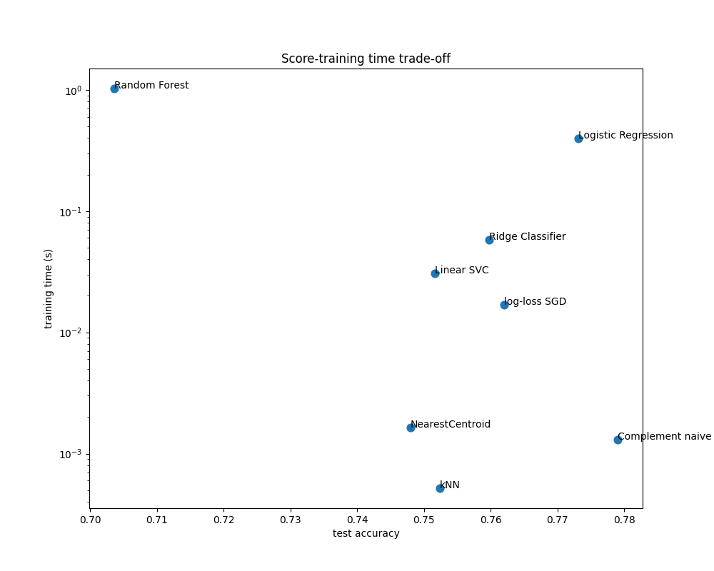
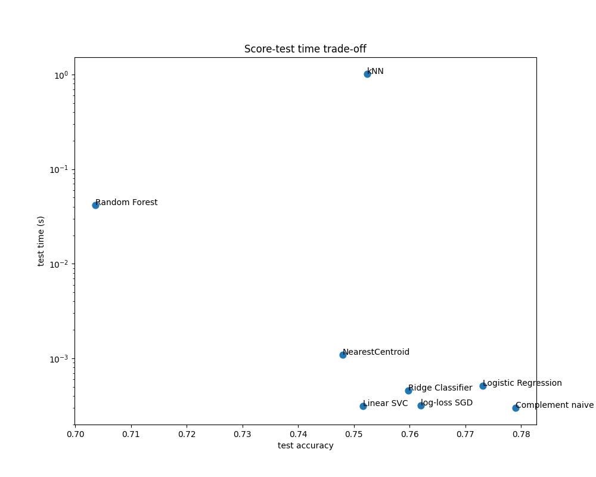

Note
Go to the end to download the full example code or to run this example in your browser via Binder
Classification of text documents using sparse features¶
This is an example showing how scikit-learn can be used to classify documents by topics using a Bag of Words approach. This example uses a Tf-idf-weighted document-term sparse matrix to encode the features and demonstrates various classifiers that can efficiently handle sparse matrices.
For document analysis via an unsupervised learning approach, see the example script Clustering text documents using k-means.
# Author: Peter Prettenhofer <peter.prettenhofer@gmail.com>
# Olivier Grisel <olivier.grisel@ensta.org>
# Mathieu Blondel <mathieu@mblondel.org>
# Arturo Amor <david-arturo.amor-quiroz@inria.fr>
# Lars Buitinck
# License: BSD 3 clause
Loading and vectorizing the 20 newsgroups text dataset¶
We define a function to load data from The 20 newsgroups text dataset, which
comprises around 18,000 newsgroups posts on 20 topics split in two subsets:
one for training (or development) and the other one for testing (or for
performance evaluation). Note that, by default, the text samples contain some
message metadata such as 'headers', 'footers' (signatures) and 'quotes'
to other posts. The fetch_20newsgroups function therefore accepts a
parameter named remove to attempt stripping such information that can make
the classification problem “too easy”. This is achieved using simple
heuristics that are neither perfect nor standard, hence disabled by default.
from time import time
from sklearn.datasets import fetch_20newsgroups
from sklearn.feature_extraction.text import TfidfVectorizer
categories = [
"alt.atheism",
"talk.religion.misc",
"comp.graphics",
"sci.space",
]
def size_mb(docs):
return sum(len(s.encode("utf-8")) for s in docs) / 1e6
def load_dataset(verbose=False, remove=()):
"""Load and vectorize the 20 newsgroups dataset."""
data_train = fetch_20newsgroups(
subset="train",
categories=categories,
shuffle=True,
random_state=42,
remove=remove,
)
data_test = fetch_20newsgroups(
subset="test",
categories=categories,
shuffle=True,
random_state=42,
remove=remove,
)
# order of labels in `target_names` can be different from `categories`
target_names = data_train.target_names
# split target in a training set and a test set
y_train, y_test = data_train.target, data_test.target
# Extracting features from the training data using a sparse vectorizer
t0 = time()
vectorizer = TfidfVectorizer(
sublinear_tf=True, max_df=0.5, min_df=5, stop_words="english"
)
X_train = vectorizer.fit_transform(data_train.data)
duration_train = time() - t0
# Extracting features from the test data using the same vectorizer
t0 = time()
X_test = vectorizer.transform(data_test.data)
duration_test = time() - t0
feature_names = vectorizer.get_feature_names_out()
if verbose:
# compute size of loaded data
data_train_size_mb = size_mb(data_train.data)
data_test_size_mb = size_mb(data_test.data)
print(
f"{len(data_train.data)} documents - "
f"{data_train_size_mb:.2f}MB (training set)"
)
print(f"{len(data_test.data)} documents - {data_test_size_mb:.2f}MB (test set)")
print(f"{len(target_names)} categories")
print(
f"vectorize training done in {duration_train:.3f}s "
f"at {data_train_size_mb / duration_train:.3f}MB/s"
)
print(f"n_samples: {X_train.shape[0]}, n_features: {X_train.shape[1]}")
print(
f"vectorize testing done in {duration_test:.3f}s "
f"at {data_test_size_mb / duration_test:.3f}MB/s"
)
print(f"n_samples: {X_test.shape[0]}, n_features: {X_test.shape[1]}")
return X_train, X_test, y_train, y_test, feature_names, target_names
Analysis of a bag-of-words document classifier¶
We will now train a classifier twice, once on the text samples including metadata and once after stripping the metadata. For both cases we will analyze the classification errors on a test set using a confusion matrix and inspect the coefficients that define the classification function of the trained models.
Model without metadata stripping¶
We start by using the custom function load_dataset to load the data without
metadata stripping.
X_train, X_test, y_train, y_test, feature_names, target_names = load_dataset(
verbose=True
)
2034 documents - 3.98MB (training set)
1353 documents - 2.87MB (test set)
4 categories
vectorize training done in 0.238s at 16.698MB/s
n_samples: 2034, n_features: 7831
vectorize testing done in 0.163s at 17.563MB/s
n_samples: 1353, n_features: 7831
Our first model is an instance of the
RidgeClassifier class. This is a linear
classification model that uses the mean squared error on {-1, 1} encoded
targets, one for each possible class. Contrary to
LogisticRegression,
RidgeClassifier does not
provide probabilistic predictions (no predict_proba method),
but it is often faster to train.
from sklearn.linear_model import RidgeClassifier
clf = RidgeClassifier(tol=1e-2, solver="sparse_cg")
clf.fit(X_train, y_train)
pred = clf.predict(X_test)
We plot the confusion matrix of this classifier to find if there is a pattern in the classification errors.
import matplotlib.pyplot as plt
from sklearn.metrics import ConfusionMatrixDisplay
fig, ax = plt.subplots(figsize=(10, 5))
ConfusionMatrixDisplay.from_predictions(y_test, pred, ax=ax)
ax.xaxis.set_ticklabels(target_names)
ax.yaxis.set_ticklabels(target_names)
_ = ax.set_title(
f"Confusion Matrix for {clf.__class__.__name__}\non the original documents"
)

The confusion matrix highlights that documents of the alt.atheism class are
often confused with documents with the class talk.religion.misc class and
vice-versa which is expected since the topics are semantically related.
We also observe that some documents of the sci.space class can be misclassified as
comp.graphics while the converse is much rarer. A manual inspection of those
badly classified documents would be required to get some insights on this
asymmetry. It could be the case that the vocabulary of the space topic could
be more specific than the vocabulary for computer graphics.
We can gain a deeper understanding of how this classifier makes its decisions by looking at the words with the highest average feature effects:
import numpy as np
import pandas as pd
def plot_feature_effects():
# learned coefficients weighted by frequency of appearance
average_feature_effects = clf.coef_ * np.asarray(X_train.mean(axis=0)).ravel()
for i, label in enumerate(target_names):
top5 = np.argsort(average_feature_effects[i])[-5:][::-1]
if i == 0:
top = pd.DataFrame(feature_names[top5], columns=[label])
top_indices = top5
else:
top[label] = feature_names[top5]
top_indices = np.concatenate((top_indices, top5), axis=None)
top_indices = np.unique(top_indices)
predictive_words = feature_names[top_indices]
# plot feature effects
bar_size = 0.25
padding = 0.75
y_locs = np.arange(len(top_indices)) * (4 * bar_size + padding)
fig, ax = plt.subplots(figsize=(10, 8))
for i, label in enumerate(target_names):
ax.barh(
y_locs + (i - 2) * bar_size,
average_feature_effects[i, top_indices],
height=bar_size,
label=label,
)
ax.set(
yticks=y_locs,
yticklabels=predictive_words,
ylim=[
0 - 4 * bar_size,
len(top_indices) * (4 * bar_size + padding) - 4 * bar_size,
],
)
ax.legend(loc="lower right")
print("top 5 keywords per class:")
print(top)
return ax
_ = plot_feature_effects().set_title("Average feature effect on the original data")
top 5 keywords per class:
alt.atheism comp.graphics sci.space talk.religion.misc
0 keith graphics space christian
1 god university nasa com
2 atheists thanks orbit god
3 people does moon morality
4 caltech image access people
We can observe that the most predictive words are often strongly positively
associated with a single class and negatively associated with all the other
classes. Most of those positive associations are quite easy to interpret.
However, some words such as "god" and "people" are positively associated to
both "talk.misc.religion" and "alt.atheism" as those two classes expectedly
share some common vocabulary. Notice however that there are also words such as
"christian" and "morality" that are only positively associated with
"talk.misc.religion". Furthermore, in this version of the dataset, the word
"caltech" is one of the top predictive features for atheism due to pollution
in the dataset coming from some sort of metadata such as the email addresses
of the sender of previous emails in the discussion as can be seen below:
data_train = fetch_20newsgroups(
subset="train", categories=categories, shuffle=True, random_state=42
)
for doc in data_train.data:
if "caltech" in doc:
print(doc)
break
From: livesey@solntze.wpd.sgi.com (Jon Livesey)
Subject: Re: Morality? (was Re: <Political Atheists?)
Organization: sgi
Lines: 93
Distribution: world
NNTP-Posting-Host: solntze.wpd.sgi.com
In article <1qlettINN8oi@gap.caltech.edu>, keith@cco.caltech.edu (Keith Allan Schneider) writes:
|> livesey@solntze.wpd.sgi.com (Jon Livesey) writes:
|>
|> >>>Explain to me
|> >>>how instinctive acts can be moral acts, and I am happy to listen.
|> >>For example, if it were instinctive not to murder...
|> >
|> >Then not murdering would have no moral significance, since there
|> >would be nothing voluntary about it.
|>
|> See, there you go again, saying that a moral act is only significant
|> if it is "voluntary." Why do you think this?
If you force me to do something, am I morally responsible for it?
|>
|> And anyway, humans have the ability to disregard some of their instincts.
Well, make up your mind. Is it to be "instinctive not to murder"
or not?
|>
|> >>So, only intelligent beings can be moral, even if the bahavior of other
|> >>beings mimics theirs?
|> >
|> >You are starting to get the point. Mimicry is not necessarily the
|> >same as the action being imitated. A Parrot saying "Pretty Polly"
|> >isn't necessarily commenting on the pulchritude of Polly.
|>
|> You are attaching too many things to the term "moral," I think.
|> Let's try this: is it "good" that animals of the same species
|> don't kill each other. Or, do you think this is right?
It's not even correct. Animals of the same species do kill
one another.
|>
|> Or do you think that animals are machines, and that nothing they do
|> is either right nor wrong?
Sigh. I wonder how many times we have been round this loop.
I think that instinctive bahaviour has no moral significance.
I am quite prepared to believe that higher animals, such as
primates, have the beginnings of a moral sense, since they seem
to exhibit self-awareness.
|>
|>
|> >>Animals of the same species could kill each other arbitarily, but
|> >>they don't.
|> >
|> >They do. I and other posters have given you many examples of exactly
|> >this, but you seem to have a very short memory.
|>
|> Those weren't arbitrary killings. They were slayings related to some
|> sort of mating ritual or whatnot.
So what? Are you trying to say that some killing in animals
has a moral significance and some does not? Is this your
natural morality>
|>
|> >>Are you trying to say that this isn't an act of morality because
|> >>most animals aren't intelligent enough to think like we do?
|> >
|> >I'm saying:
|> > "There must be the possibility that the organism - it's not
|> > just people we are talking about - can consider alternatives."
|> >
|> >It's right there in the posting you are replying to.
|>
|> Yes it was, but I still don't understand your distinctions. What
|> do you mean by "consider?" Can a small child be moral? How about
|> a gorilla? A dolphin? A platypus? Where is the line drawn? Does
|> the being need to be self aware?
Are you blind? What do you think that this sentence means?
"There must be the possibility that the organism - it's not
just people we are talking about - can consider alternatives."
What would that imply?
|>
|> What *do* you call the mechanism which seems to prevent animals of
|> the same species from (arbitrarily) killing each other? Don't
|> you find the fact that they don't at all significant?
I find the fact that they do to be significant.
jon.
Such headers, signature footers (and quoted metadata from previous messages) can be considered side information that artificially reveals the newsgroup by identifying the registered members and one would rather want our text classifier to only learn from the “main content” of each text document instead of relying on the leaked identity of the writers.
Model with metadata stripping¶
The remove option of the 20 newsgroups dataset loader in scikit-learn allows
to heuristically attempt to filter out some of this unwanted metadata that
makes the classification problem artificially easier. Be aware that such
filtering of the text contents is far from perfect.
Let us try to leverage this option to train a text classifier that does not rely too much on this kind of metadata to make its decisions:
(
X_train,
X_test,
y_train,
y_test,
feature_names,
target_names,
) = load_dataset(remove=("headers", "footers", "quotes"))
clf = RidgeClassifier(tol=1e-2, solver="sparse_cg")
clf.fit(X_train, y_train)
pred = clf.predict(X_test)
fig, ax = plt.subplots(figsize=(10, 5))
ConfusionMatrixDisplay.from_predictions(y_test, pred, ax=ax)
ax.xaxis.set_ticklabels(target_names)
ax.yaxis.set_ticklabels(target_names)
_ = ax.set_title(
f"Confusion Matrix for {clf.__class__.__name__}\non filtered documents"
)
By looking at the confusion matrix, it is more evident that the scores of the model trained with metadata were over-optimistic. The classification problem without access to the metadata is less accurate but more representative of the intended text classification problem.
_ = plot_feature_effects().set_title("Average feature effects on filtered documents")
top 5 keywords per class:
alt.atheism comp.graphics sci.space talk.religion.misc
0 don graphics space god
1 people file like christian
2 say thanks nasa jesus
3 religion image orbit christians
4 post does launch wrong
In the next section we keep the dataset without metadata to compare several classifiers.
Benchmarking classifiers¶
Scikit-learn provides many different kinds of classification algorithms. In this section we will train a selection of those classifiers on the same text classification problem and measure both their generalization performance (accuracy on the test set) and their computation performance (speed), both at training time and testing time. For such purpose we define the following benchmarking utilities:
from sklearn import metrics
from sklearn.utils.extmath import density
def benchmark(clf, custom_name=False):
print("_" * 80)
print("Training: ")
print(clf)
t0 = time()
clf.fit(X_train, y_train)
train_time = time() - t0
print(f"train time: {train_time:.3}s")
t0 = time()
pred = clf.predict(X_test)
test_time = time() - t0
print(f"test time: {test_time:.3}s")
score = metrics.accuracy_score(y_test, pred)
print(f"accuracy: {score:.3}")
if hasattr(clf, "coef_"):
print(f"dimensionality: {clf.coef_.shape[1]}")
print(f"density: {density(clf.coef_)}")
print()
print()
if custom_name:
clf_descr = str(custom_name)
else:
clf_descr = clf.__class__.__name__
return clf_descr, score, train_time, test_time
We now train and test the datasets with 8 different classification models and get performance results for each model. The goal of this study is to highlight the computation/accuracy tradeoffs of different types of classifiers for such a multi-class text classification problem.
Notice that the most important hyperparameters values were tuned using a grid search procedure not shown in this notebook for the sake of simplicity. See the example script Sample pipeline for text feature extraction and evaluation # noqa: E501 for a demo on how such tuning can be done.
from sklearn.ensemble import RandomForestClassifier
from sklearn.linear_model import LogisticRegression, SGDClassifier
from sklearn.naive_bayes import ComplementNB
from sklearn.neighbors import KNeighborsClassifier, NearestCentroid
from sklearn.svm import LinearSVC
results = []
for clf, name in (
(LogisticRegression(C=5, max_iter=1000), "Logistic Regression"),
(RidgeClassifier(alpha=1.0, solver="sparse_cg"), "Ridge Classifier"),
(KNeighborsClassifier(n_neighbors=100), "kNN"),
(RandomForestClassifier(), "Random Forest"),
# L2 penalty Linear SVC
(LinearSVC(C=0.1, dual=False, max_iter=1000), "Linear SVC"),
# L2 penalty Linear SGD
(
SGDClassifier(
loss="log_loss", alpha=1e-4, n_iter_no_change=3, early_stopping=True
),
"log-loss SGD",
),
# NearestCentroid (aka Rocchio classifier)
(NearestCentroid(), "NearestCentroid"),
# Sparse naive Bayes classifier
(ComplementNB(alpha=0.1), "Complement naive Bayes"),
):
print("=" * 80)
print(name)
results.append(benchmark(clf, name))
================================================================================
Logistic Regression
________________________________________________________________________________
Training:
LogisticRegression(C=5, max_iter=1000)
train time: 0.397s
test time: 0.000515s
accuracy: 0.773
dimensionality: 5316
density: 1.0
================================================================================
Ridge Classifier
________________________________________________________________________________
Training:
RidgeClassifier(solver='sparse_cg')
train time: 0.0577s
test time: 0.000455s
accuracy: 0.76
dimensionality: 5316
density: 1.0
================================================================================
kNN
________________________________________________________________________________
Training:
KNeighborsClassifier(n_neighbors=100)
train time: 0.000519s
test time: 1.01s
accuracy: 0.752
================================================================================
Random Forest
________________________________________________________________________________
Training:
RandomForestClassifier()
train time: 1.02s
test time: 0.0417s
accuracy: 0.704
================================================================================
Linear SVC
________________________________________________________________________________
Training:
LinearSVC(C=0.1, dual=False)
train time: 0.0305s
test time: 0.000312s
accuracy: 0.752
dimensionality: 5316
density: 1.0
================================================================================
log-loss SGD
________________________________________________________________________________
Training:
SGDClassifier(early_stopping=True, loss='log_loss', n_iter_no_change=3)
train time: 0.0168s
test time: 0.000317s
accuracy: 0.762
dimensionality: 5316
density: 1.0
================================================================================
NearestCentroid
________________________________________________________________________________
Training:
NearestCentroid()
train time: 0.00164s
test time: 0.00109s
accuracy: 0.748
================================================================================
Complement naive Bayes
________________________________________________________________________________
Training:
ComplementNB(alpha=0.1)
train time: 0.00131s
test time: 0.0003s
accuracy: 0.779
Plot accuracy, training and test time of each classifier¶
The scatter plots show the trade-off between the test accuracy and the training and testing time of each classifier.
indices = np.arange(len(results))
results = [[x[i] for x in results] for i in range(4)]
clf_names, score, training_time, test_time = results
training_time = np.array(training_time)
test_time = np.array(test_time)
fig, ax1 = plt.subplots(figsize=(10, 8))
ax1.scatter(score, training_time, s=60)
ax1.set(
title="Score-training time trade-off",
yscale="log",
xlabel="test accuracy",
ylabel="training time (s)",
)
fig, ax2 = plt.subplots(figsize=(10, 8))
ax2.scatter(score, test_time, s=60)
ax2.set(
title="Score-test time trade-off",
yscale="log",
xlabel="test accuracy",
ylabel="test time (s)",
)
for i, txt in enumerate(clf_names):
ax1.annotate(txt, (score[i], training_time[i]))
ax2.annotate(txt, (score[i], test_time[i]))
- 
- 
The naive Bayes model has the best trade-off between score and training/testing time, while Random Forest is both slow to train, expensive to predict and has a comparatively bad accuracy. This is expected: for high-dimensional prediction problems, linear models are often better suited as most problems become linearly separable when the feature space has 10,000 dimensions or more.
The difference in training speed and accuracy of the linear models can be explained by the choice of the loss function they optimize and the kind of regularization they use. Be aware that some linear models with the same loss but a different solver or regularization configuration may yield different fitting times and test accuracy. We can observe on the second plot that once trained, all linear models have approximately the same prediction speed which is expected because they all implement the same prediction function.
KNeighborsClassifier has a relatively low accuracy and has the highest testing time. The long prediction time is also expected: for each prediction the model has to compute the pairwise distances between the testing sample and each document in the training set, which is computationally expensive. Furthermore, the “curse of dimensionality” harms the ability of this model to yield competitive accuracy in the high dimensional feature space of text classification problems.
Total running time of the script: (0 minutes 5.672 seconds)